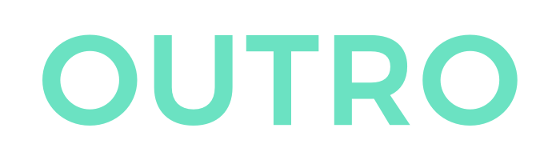
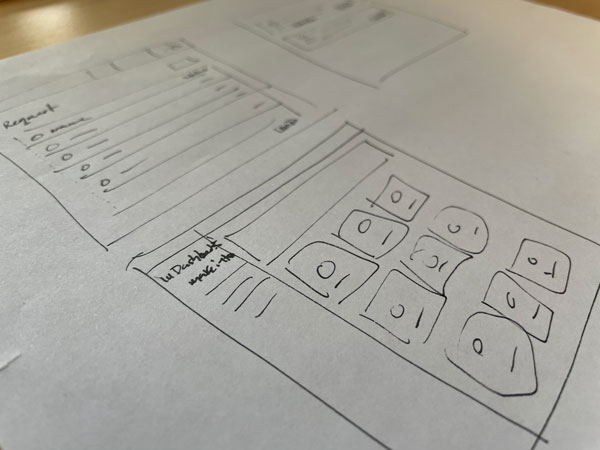
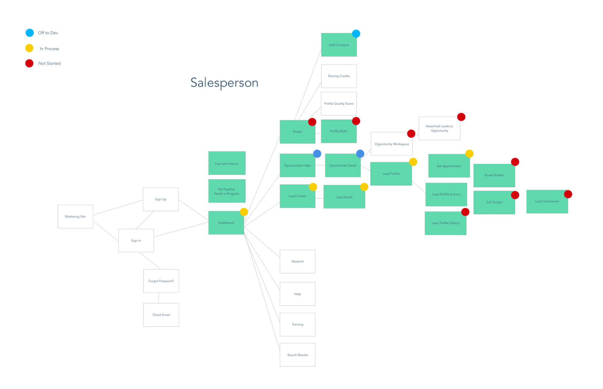
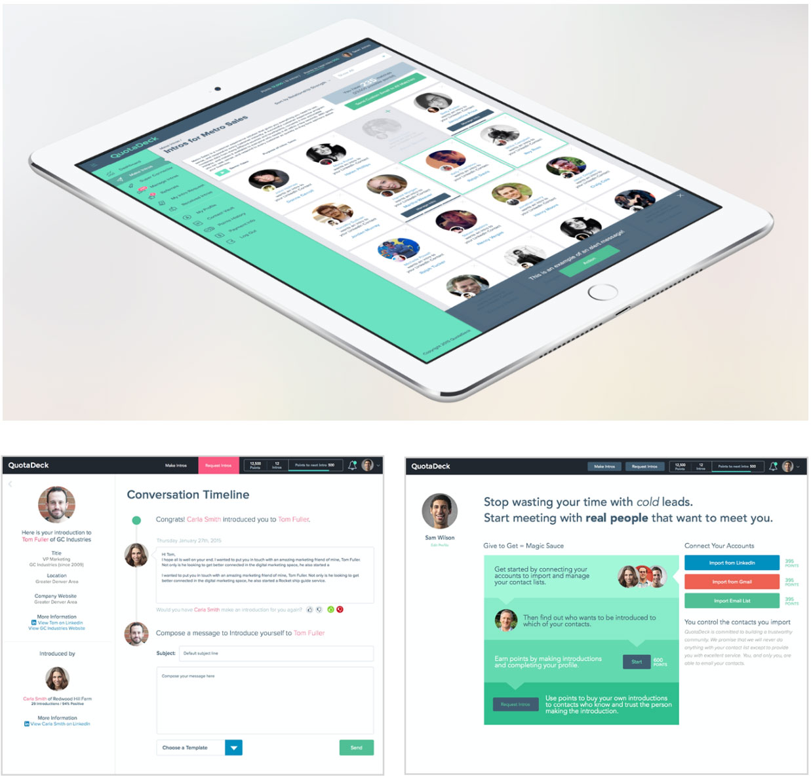
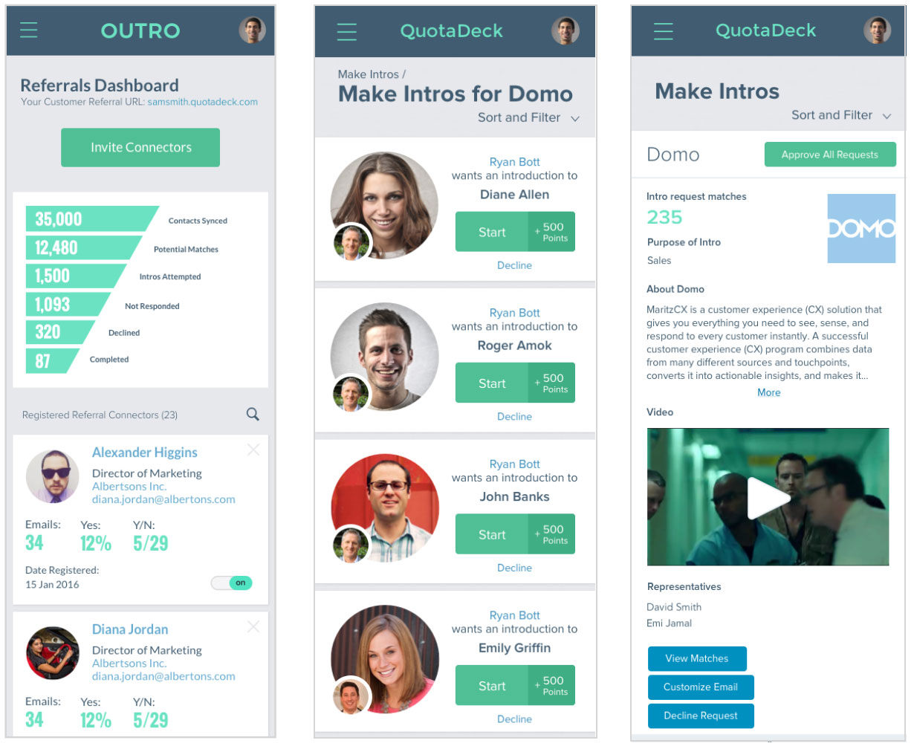

Outro (initially called Quotadeck) was a small startup that never made it off the ground. The founders envisioned a service that delivered sales leads as referrals from members of the community. Each member would earn points by matching people from their personal networks to requests from those seeking leads. Unfortunately the company didn’t get the investors it needed and has since closed its doors.
Project Management
User Research
Information Architecture
UX/UI Design
Prototyping
Presentation

The founders underlying goal was to attract investors. They leveraged early investment to build a functional proof of concept. They developed a great brand and initial interest in the idea was strong. I was brought in to design the application UI and create physical and digital marketing assets.
Having realized right away that getting user input was going to be a challenge, I decided to leverage my personal network and recruited users to validate the IA, wireframes and designs as part of my design process.

The founders preferred to give me sketches on paper with their ideas and ask me to “design it.” I would take the sketches and deduce what business outcomes they were looking for and how it would fit with what the users expected.
Next I reworked the designs and made new sketches and mockups to better meet the user and business needs. When possible I would validate the new sketches and designs with users and people I trusted to give me frank feedback.
Armed with this feedback I would work with the founders to try and get them onboard with the suggested changes.

Though never asked for, I maintained "site maps" for the key user types to help keep track of the experience as a whole. I was also able to keep track of what screens and flows were currently being developed, designed, or were still in discovery.
Once we agreed on the direction I finished out the final visual designs for desktop and mobile screen sizes.
Next I build out Invisionapp or PPT prototypes to help with hand-off to the off-shore dev team.
The dev process involved a few rounds of back and forth with the team in India. Sometimes this would mean adjustments to the design in order to better accommodate the dev priorities.


The pilot users had great feedback on the service and seemed to love the user experience, but in the end, the team was unable to secure investors and the whole project was shut down.
All in all, it was a fun project that allowed me to have a key role in designing an entirely new kind of service platform. I learned a lot about working as a one-person design team. I gained experience working with an offshore team and how working for a startup looking for investors can affect the design process.